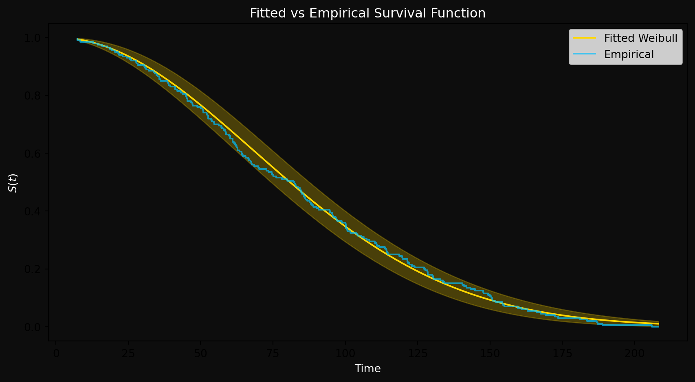
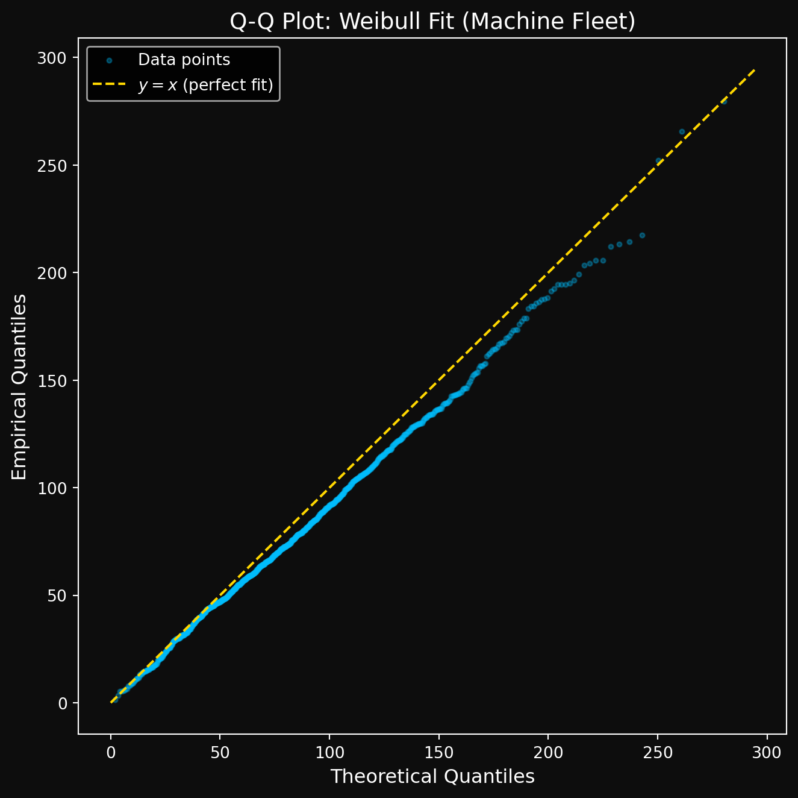
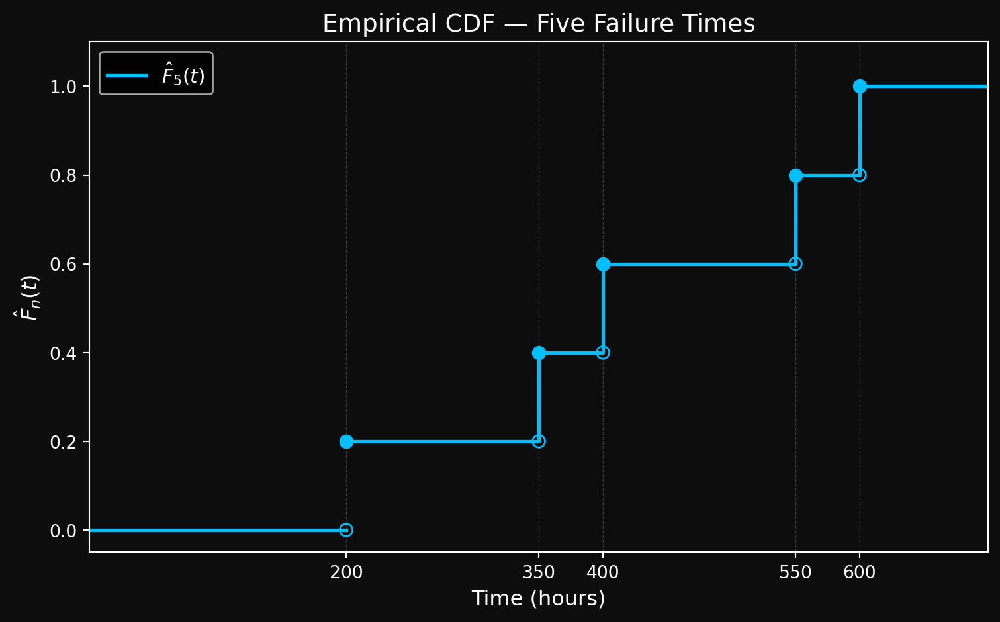
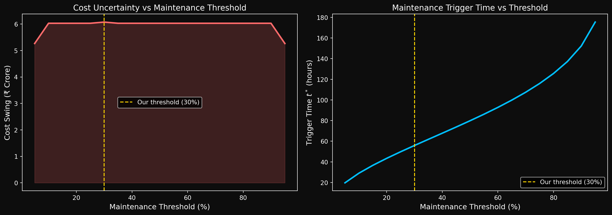

In Part 2, we built a vocabulary of survival distributions — the Exponential for constant hazard, the Rayleigh for linearly increasing hazard, and the Weibull as the unifying family that contains both as special cases. Along the way we took a detour through the connection between the Rayleigh, Normal, and Exponential distributions, and ended with the bathtub curve — the most common failure pattern in real engineered systems.
But a distribution is not a model until it is fit to data. In Part 3, we ask: given a dataset of failure times — some exact, some censored — how do we estimate the parameters of these distributions? We will derive the likelihood function under censoring from first principles, apply maximum likelihood estimation, and assess the quality of our fits using diagnostic tools. Python code throughout using lifelines.
Maximum Likelihood Estimation
We will review the maximum likelihood estimation (MLE) framework with a simple example. We will then extend this framework to handle censored data, which is what makes survival analysis different from classical statistical inference. We will derive the likelihood function for censored data, and then apply MLE to estimate the parameters of the distributions we have discussed. We will simulate some synthetic data to demonstrate the MLE process in practice. If you are new to MLE and feel lost, you can consult any standard statistics textbook or an online resource for a more detailed introduction. The key idea is that MLE provides a systematic way to estimate the parameters of a statistical model by finding the parameter values that maximize the likelihood of observing the given data.
The Likelihood Function
This is the heart of the matter. Likelihoods often are confused with probabilities – they look similar, their forms are similar but they are conceptually different. In probability, we ask: given a model with known parameters, what is the chance of observing the data? In likelihood, we ask: given the observed data, what is the chance that the data came from a model with certain parameters? To give a concrete example, suppose we observe a failure time of 5 hours. Let’s suppose we have a model that says the failure time follows an exponential distribution with a mean of 10 hours. Probability asks: What is the probability of observing a failure between 4 and 6 hours given this model? Likelihood asks: Across all possible values of the mean (or rate) parameter, for which value does the observed time of 5 hours seems most plausible?
Here is the setup. We have a sequence of observed failure times \(t_1, t_2, \ldots, t_n\) that we assume are independent and identically distributed (i.i.d.) samples from some distribution with a parameter \(\theta\). The likelihood function is defined as the joint probability of observing this data given the parameter \(\theta\): In the simplest setup, we will assume that all observations are exact failure times (no censoring). In that case, the likelihood function is:
\[L(\theta) = P(t_1, t_2, \ldots, t_n ; \theta)\]
Note that this is a function of \(\theta\) - we are treating the data as fixed and asking how likely different values of \(\theta\) are to have generated this data. Since most of our work will involve continuous distributions, we will often work with the probability density function (pdf) instead of the probability mass function (pmf). In that case, the likelihood becomes:
Note that some authors use the conditional probability notation \(P(t_i | \theta)\) instead of the joint probability notation \(P(t_1, t_2, \ldots, t_n ; \theta)\), but the meaning is the same. The likelihood function captures how well the model with parameter \(\theta\) explains the observed data. The MLE process will involve finding the value of \(\theta\) that maximizes this likelihood function. We will use the semicolons in the notation to emphasize that we are treating the data as fixed and the parameter as an unknown constant. If the parameter is itself a random variable with a prior distribution, then we are in the realm of Bayesian inference, which is a different framework. In MLE, we do not assign a prior distribution to the parameter; we simply find the value that maximizes the likelihood of the observed data.
The Maximum Likelihood Estimation Process
The MLE process involves finding the value of \(\theta\) that maximizes the likelihood function \(L(\theta)\). In practice, it is often easier to work with the log-likelihood function, which is the natural logarithm of the likelihood:
If the likelihood function is well-behaved (e.g., it is differentiable), we can find the MLE estimate by taking the derivative of the log-likelihood with respect to \(\theta\), setting it equal to zero, and solving for \(\theta\). This gives us the critical points of the log-likelihood function, which we can then evaluate to find the maximum. To show that the critical point we find is indeed a maximum, we can check the second derivative or use other methods if necessary. Let’s see how this works in practice with a simple example.
Suppose we have a dataset of failure times that we believe follows an exponential distribution. The exponential distribution has a single parameter \(\lambda\) (the rate), and its pdf is given by:
\[f(t ; \lambda) = \lambda e^{-\lambda t}\]
Given a dataset of failure times \(t_1, t_2, \ldots, t_n\), the likelihood function for the exponential distribution is:
\[\ell(\lambda) = n \log \lambda - \lambda \sum_{i=1}^n t_i\]
To find the MLE estimate \(\hat{\lambda}\), we take the derivative of \(\ell(\lambda)\) with respect to \(\lambda\), set it equal to zero, and solve for \(\lambda\):
Solving for \(\lambda\) gives us: \[\hat{\lambda}_{\text{MLE}} = \frac{n}{\sum_{i=1}^n t_i}\]
This is the MLE estimate for the rate parameter of the exponential distribution based on our observed failure times. Notice that this estimate is simply the reciprocal of the sample mean of the failure times, which makes intuitive sense given the properties of the exponential distribution. We can verify that this critical point is indeed a maximum by checking the second derivative of the log-likelihood function evaluated at \(\hat{\lambda}_{\text{MLE}}\):
which is negative for all \(\lambda > 0\). Therefore, we have a maximum at \(\hat{\lambda}_{\text{MLE}}\). In fact, the (only) critical point we find is a global maximum.
For a vector of parameters \(\boldsymbol{\theta}\) with components \(\theta_1, \theta_2, \ldots, \theta_p\), the MLE process is similar but we take the gradient of the log-likelihood with respect to the vector of parameters and set it equal to the zero vector to find the critical points. We can then use the Hessian matrix to check whether we have a maximum, minimum, or saddle point. For instance, the Weibull distribution has two parameters, the shape \(\gamma\) and the scale \(\theta\). The MLE process would involve taking the gradient of the log-likelihood with respect to both \(\gamma\) and \(\theta\), setting it equal to zero, and solving for both parameters simultaneously. Let’s derive the MLE equations for the Weibull distribution. Suppose you have a dataset of failure times \(t_1, t_2, \ldots, t_n\) that you believe follows a Weibull distribution with shape parameter \(\gamma\) and scale parameter \(\theta\). The pdf of the Weibull distribution is given by:
To find the MLE estimates \(\hat{\gamma}\) and \(\hat{\theta}\), we take the gradient of \(\ell(\gamma, \theta)\) with respect to both parameters, set it equal to zero, and solve for \(\gamma\) and \(\theta\). This will give us a system of equations that we can solve numerically to find the MLE estimates. The resulting equations are nonlinear and do not have a closed-form solution, which is why we need numerical optimization methods to find the MLE estimates for the Weibull distribution. We will see how to do this in practice using lifelines in the simulation below.
import numpy as npfrom lifelines import WeibullFitterimport matplotlib.pyplot as plt# Generate synthetic Weibull datanp.random.seed(42)true_gamma =2.0# shapetrue_theta =100.0# scalen =200# number of samples# Weibull random samples using inverse CDFu = np.random.uniform(0, 1, n)t = true_theta * (-np.log(1- u))**(1/true_gamma)# All observed (no censoring yet)event_observed = np.ones(n)# Fitwf = WeibullFitter()wf.fit(t, event_observed=event_observed)wf.print_summary()
model
lifelines.WeibullFitter
number of observations
200
number of events observed
200
log-likelihood
-1035.10
hypothesis
lambda_ != 1, rho_ != 1
coef
se(coef)
coef lower 95%
coef upper 95%
cmp to
z
p
-log2(p)
lambda_
97.18
3.63
90.06
104.29
1.00
26.50
<0.005
511.45
rho_
1.99
0.11
1.78
2.21
1.00
8.93
<0.005
60.96
AIC
2074.19
Figure 1
lifelines uses lambda_ for the scale parameter \(\theta\) and rho_ for the shape parameter \(\gamma\) — different notation, same parameters. With \(n = 200\) observations, the estimated parameters are already close to the true values:
MLE recovers the true parameters with high accuracy even at modest sample sizes.

Figure 2: Fitted Weibull survival curve vs empirical survival curve
The fitted Weibull survival curve (gold) closely tracks the empirical survival function (blue) across the entire time range. The empirical survival function is simply the fraction of systems still surviving at each time point — no distributional assumptions, just the raw data speaking for itself. The fact that the fitted curve hugs it so tightly tells us two things: MLE found good parameter estimates, and the Weibull is a reasonable model for this data. We will make this “goodness of fit” assessment more rigorous later using diagnostic tools.
But there is a catch — this was the easy case. All 200 observations were exact failure times. In practice, not all machines will have failed by the end of the study — some will still be running when the study ends. How do we modify the likelihood function to account for censoring? This is the key question that makes survival analysis different from classical statistical inference. We derive the censored likelihood function from first principles next.
MLE with Censored Data
Remember that in survival analysis, we often have censored data — we know that a system survived up to a certain time, but we don’t know the exact failure time. This is called right-censoring. We need to modify our likelihood function to account for this type of data. Recall from Part 1 of the series that we observe pairs of the form \((Y_i, \delta_i)\) where \(Y_i = \min(T_i, C_i)\) is the observed time (either failure time or censoring time) and \(\delta_i\) is an indicator variable that is 1 if the event (failure) was observed and 0 if it was censored. If \(\delta_i = 1\), we know that the failure time \(T_i\) was observed and is equal to \(Y_i\). If \(\delta_i = 0\), we know that the system survived up to time \(Y_i\), but we don’t know the exact failure time.
A brief notational remark before we proceed further. \(T_i\) and \(C_i\) are random variables representing the (unknown) failure time and censoring time of the \(i\)-th unit. Their realizations — the actual observed values — are denoted \(t_i\) and \(c_i\) in lowercase. \(Y_i = \min(T_i, C_i)\) is also a random variable, and its realization is \(y_i = \min(t_i, c_i)\). We use uppercase for random variables and lowercase for their observed values throughout.
How does this affect the likelihood function? For an observed failure time (when \(\delta_i = 1\)), the contribution to the likelihood is simply the pdf evaluated at \(Y_i\): \(f(y_i ; \theta)\). This is equal to the pdf evaluated at the failure time \(t_i\).
For a censored observation (when \(\delta_j = 0\)), the observation tells us that the failure time \(T_j\) is greater than \(Y_j\). The contribution to the likelihood is the probability that the system survived past \(Y_j\), which is given by the survival function: \(S(Y_j ; \theta) = P(T_j > Y_j)\).
The full likelihood function for a dataset with both exact failure times and censored observations is the product of the contributions from all observations:
You might be wondering why we have the exponents \(\delta_i\) and \(1 - \delta_i\) in the likelihood function. This is a common way to write the likelihood function in survival analysis to compactly represent both types of observations. When \(\delta_i = 1\), the term \([f(y_i ; \theta)]^{\delta_i}\) becomes \(f(y_i ; \theta)\) and the term \([S(y_i ; \theta)]^{1 - \delta_i}\) becomes 1, so the contribution to the likelihood is just \(f(y_i ; \theta)\). When \(\delta_j = 0\), the term \([f(y_j ; \theta)]^{\delta_j}\) becomes 1 and the term \([S(y_j ; \theta)]^{1 - \delta_j}\) becomes \(S(y_j ; \theta)\), so the contribution to the likelihood is just \(S(y_j ; \theta)\). This way of writing the likelihood function allows us to handle both types of observations in a unified framework. This is very similar to writing the likelihood function (or loss function) in logistic regression, where we have a binary outcome and we use the observed labels to determine which term contributes to the likelihood for each observation.
Finally, a point worth observing is that the likelihood function for censored data is not a simple product of pdfs, but rather a product of a mixture of pdfs and survival functions. How can you combine the PDF (which is a density) and the survival function (which is a probability) in the same likelihood function? The answer lies in the fact that we are not comparing incompatible objects. For a censored observation, \(S(y_j;\theta) = P(T_j > y_j)\) is a genuine probability. For an exact failure, \(f(y_i;\theta)\) is a density — but both contribute to the same likelihood because we are asking the same question for each observation: what parameter value \(\theta\) makes this observation most plausible? The likelihood function combines these two types of contributions in a unified framework that allows MLE to work even in the presence of censoring.
If you want to be very abstract and not make a big deal about the fact that we are mixing densities and probabilities, you can just think of the likelihood function as a product of two functions and you are trying to find the parameter values that maximize this product. The abstract view strips away the details and allows you to focus on the optimization problem. However, it has a disadvantage that it takes away the intuition about why we are using the pdf for exact failures and the survival function for censored observations. The more concrete view emphasizes the different contributions to the likelihood from different types of observations, which can help build intuition about how MLE works in the presence of censoring. Both views are valid and can be useful in different contexts.
Let’s spend some more time on understanding true failure \(\delta = 1\) vs censoring \(\delta = 0\) and how they contribute to the likelihood function a little more intuitively.
Case 1: \(\delta_i = 1\) (exact failure observed).
In this case, we know that the observed failure time \(t_i\) (a realization of \(T_i\)) is less than or equal to the censoring time \(C_i\). Consider the event that the failure time \(T_i \leq C_i\) and the failure time is in a small interval around \(t_i\). If the censoring time \(C_i\) and the failure time \(T_i\) are independent, then the joint probability of observing a failure at time \(t_i\) and it being uncensored can be expressed as:
\[P(T_i \in [t_i, t_i + \Delta t], T_i \leq C_i) = P(T_i \in [t_i, t_i + \Delta t]) \cdot P(C_i \geq t_i)\] The first term \(P(T_i \in [t_i, t_i + \Delta t])\) is approximately equal to the pdf evaluated at \(t_i\): \(f(t_i ; \theta) \Delta t\). The second term \(P(C_i \geq t_i)\) is the probability that the censoring time is greater than or equal to \(t_i\), which is given by the survival function of the censoring distribution evaluated at \(t_i\): \(S_C(t_i)\). Therefore, the contribution to the likelihood from an exact failure observation can be expressed as:
Since we are maximizing the likelihood with respect to \(\theta\), the term \(S_C(t_i)\) does not depend on \(\theta\) and can be treated as a constant. Therefore, the contribution to the likelihood from an exact failure observation is effectively proportional to the pdf evaluated at \(t_i\): \(f(t_i ; \theta)\). This is why we use the pdf for exact failure observations in the likelihood function. Note that the term \(S_C(t_i)\) is the survival function of the censoring distribution, which represents the probability that the censoring time is greater than or equal to \(t_i\) and therefore has nothing to do with the failure parameters \(\theta\) that we are trying to estimate.
Case 2: \(\delta_j = 0\) (censored observation).
In this case, we know that the system survived up to time \(y_j\), but we don’t know the exact failure time. The contribution to the likelihood from a censored observation is the probability that the failure time \(T_j\) is greater than \(y_j\): \(P(T_j > y_j) = S(y_j ; \theta)\). We know with certainty that the system survived up to time \(y_j\), so the likelihood contribution is the probability of surviving past that time, which is given by the survival function. Consider the event that the failure time \(T_j\) is greater than \(y_j\) and the censoring time \(C_j\) is in a small interval around \(y_j\). If the censoring time \(C_j\) and the failure time \(T_j\) are independent, then the joint probability of observing a censored observation at time \(y_j\) can be expressed as:
The first term \(P(T_j > y_j)\) is the probability that the failure time is greater than \(y_j\), which is given by the survival function evaluated at \(y_j\): \(S(y_j ; \theta)\). The second term \(P(C_j \in [y_j, y_j + \Delta t])\) is approximately equal to the pdf of the censoring distribution evaluated at \(Y_j\): \(f_C(y_j) \Delta t\). Therefore, the contribution to the likelihood from a censored observation can be expressed as:
Since we are maximizing the likelihood with respect to \(\theta\), the term \(f_C(Y_j) \Delta t\) does not depend on \(\theta\) and can be treated as a constant. Therefore, the contribution to the likelihood from a censored observation is effectively proportional to the survival function evaluated at \(Y_j\): \(S(y_j ; \theta)\). This is why we use the survival function for censored observations in the likelihood function. Note that the term \(f_C(y_j) \Delta t\) is the pdf of the censoring distribution, which represents the probability of observing a censoring event at time \(Y_j\) and therefore has nothing to do with the failure parameters \(\theta\) that we are trying to estimate.
Combining both cases and all the observations, the full censored likelihood is:
where the \(\Delta t\) and censoring distribution terms have been absorbed into a proportionality constant that does not affect the location of the maximum.
The assumption of independence between the failure time and censoring time is crucial for this derivation. This is known as the non-informative censoring assumption, which tells us that knowing when a subject was censored does not give us any information about their failure time. This assumption is violated in some real world scenarios, such as when a machine operator decides to stop a machine that is showing signs of imminent failure, or when a patient drops out of a clinical trial due to worsening health. In such cases, the censoring is informative and the standard MLE approach may yield biased estimates. There are methods to handle informative censoring, such as joint modeling of the failure and censoring processes, but these are beyond the scope of this post.
Based on our previous study of the relationship between the pdf and the survival function, we can express the log-likelihood function in terms of the hazard function \(\lambda(t ; \theta)\). Recall that the pdf can be expressed as \(f(t ; \theta) = \lambda(t ; \theta) S(t ; \theta)\), so we can rewrite the log-likelihood function as:
Notice that \(\log S(y_i;\theta)\) appears for every observation regardless of whether it failed or was censored — survival information contributes to the likelihood for all units. The hazard term \(\delta_i \log \lambda(y_i;\theta)\) only contributes for observed failures. This is the elegance of the censored likelihood. Finally, we can express the log-likelihood function in terms of the cumulative hazard function \(\Lambda(t ; \theta)\) using the relationship \(S(t ; \theta) = e^{-\Lambda(t ; \theta)}\):
Now we use our calculus machinery to find the MLE estimates. Taking the derivative of the log-likelihood function with respect to \(\theta\) and setting it equal to zero gives us the MLE equations that we can solve to find the parameter estimates. The specific forms of these equations will depend on the distribution we are fitting. And sometimes, these equations will be so nonlinear and complex that we won’t be able to solve them analytically. We will see how to handle this in practice using numerical optimization methods in lifelines when we fit the Weibull distribution with censored data in the next section.
But first, let’s calculate the analytical MLE estimates for the exponential distribution with censored data to see how the presence of censoring modifies the MLE equations. The exponential distribution has a single parameter \(\lambda\) (the rate), and its pdf and survival function are given by:
The quantity \(\sum_{i=1}^n y_i\) is known as the total time at risk, which is the sum of the observed times for all units, regardless of whether they failed or were censored. Each unit contributes to the total time at risk based on its observed duration. The quantity \(\sum_{i=1}^n \delta_i\) is the total number of observed failures.
Isn’t this marvelous? The MLE estimate for the rate parameter \(\lambda\) in the presence of censoring is simply the total number of observed failures (the sum of \(\delta_i\)) divided by the total time at risk (the sum of \(y_i\)). If the data were fully observed with no censoring, then \(\sum_{i=1}^n \delta_i = n\) and we would recover the MLE estimate for the exponential distribution without censoring: \(\hat{\lambda}_{\text{MLE}} = \frac{n}{\sum_{i=1}^n y_i}\) (I have used \(y_i\) instead of \(t_i\) for consistency with the current topic). The presence of censoring effectively reduces the number of observed failures and increases the total time at risk, which leads to a different MLE estimate that accounts for the incomplete information in the data. This is the power of the censored likelihood function — it allows us to make valid inferences about the parameters of the failure distribution even when we have incomplete data due to censoring. It is left an exercise for the reader to verify that the MLE estimate for the exponential distribution with censored data is indeed a maximum by checking the second derivative of the log-likelihood function evaluated at \(\hat{\lambda}_{\text{MLE}}\).
MLE with Censoring: A synthetic data example
Rather than working with abstract numbers and symbols, let’s build a dataset that will accompany us for the rest of the series- a synthetic fleet of 1000 machines, each with its own age, operating conditions, and failure history.
We generate a synthetic fleet of 1000 machines, each with 8 continuous and 2 categorical covariates representing realistic machine characteristics — age, operating temperature, vibration level, manufacturer, and so on. The true failure times are drawn from a Weibull distribution with shape \(\gamma = 2.0\) and a scale parameter \(\theta\) that depends on the covariates — higher stress (temperature, vibration, load) shrinks \(\theta\) and shortens expected lifetime, while more maintenance history extends it.
For now, we work only with the observed times — whether the machine failed or was censored. But in reality, a machine’s lifetime depends on its physical characteristics — how old it is, how hard it runs, the temperature it operates at, how well it has been maintained. Modeling the relationship between these characteristics and the failure time is exactly what survival regression models like the Cox Proportional Hazards model are built to do — and that is where we are headed.
Now, we will fit a Weibull to the observed times with lifelines. Here is the piece of code.
886 out of 1000 machines failed during the study- an 88.6% event rate with 11.4% censored. The fitted shape parameter \(\hat{\gamma} = 1.86\) is close to but not exactly the true value of \(\gamma = 2.0\). This is expected — we are fitting a single Weibull to all 1000 machines while ignoring the fact that each machine has a different \(\theta\) driven by its covariates. By fitting a single Weibull, we are forcing one distribution to describe a heterogeneous fleet of machines. This is precisely why survival regression methods exist- to model how machine characteristics influence lifetime. We will get there eventually. But first, let’s assess how well this naive fit describes the data using diagnostic tools.
Diagnostic Tool: Q-Q Plot
The Q-Q plot is a graphical method to display whether a dataset follows a particular distribution or whether two datasets come from the same population. For our purposes, we are testing if the dataset comes from a particular Weibull or not. Note that the game is rigged- we simulated data to follow a particular Weibull, so we already know the answer. But the Q-Q plot is a diagnostic tool we will use repeatedly on real data where we do not know the answer.
The basic idea of the Q-Q plot is to compare theoretical quantiles vs empirical quantiles. If the data fits a particular Weibull, these quantiles should match and the points should fall on a straight line. Here is how we’ll build the Q-Q plot for the Weibull step by step.
Step 1: Theoretical Quantiles
Recall that the \(p\)-th quantile of a probability distribution is the value \(t_p\) such that \(P(T \leq t_p) = p\) where \(p \in [0, 1]\). For instance, the 0.5 quantile (also called the 50th percentile) is the median. Let’s derive the theoretical quantiles of the Weibull distribution.
We want to find \(t_p\) such that \(F(t_p) = p\). If \(T \sim \text{Weibull}(\theta, \gamma)\), then:
This is the quantile function (inverse CDF) of the Weibull distribution. Given a probability \(p\), it tells us the time by which a fraction \(p\) of systems are expected to have failed.
Here is a special value: \(p = 1 - \frac{1}{e}\). Substituting into the quantile function:
So \(t_{1-1/e} = \theta\) — the scale parameter \(\theta\) is exactly the \((1 - 1/e) \approx 63.2\)th percentile of the Weibull distribution, regardless of the shape parameter \(\gamma\). This confirms what we noted earlier: by time \(\theta\), approximately 63.2% of systems will have failed.
Step 2: Empirical Quantiles
The empirical quantiles are the ones you get directly from your dataset.
Step 2a: Sort your data. Arrange the observed failure times in ascending order:
\[t_{(1)} \leq t_{(2)} \leq \cdots \leq t_{(n)}\]
The notation \(t_{(i)}\) denotes the \(i\)-th order statistic — \(t_{(1)}\) is the smallest observed failure time, \(t_{(2)}\) is the next smallest, and \(t_{(n)}\) is the largest.
Step 2b: Assign plotting positions. The \(i\)-th order statistic \(t_{(i)}\) corresponds to an approximate quantile level:
\[\hat{p}_i = \frac{i - 0.3}{n + 0.4}\]
This is known as the median rank formula (Benard’s approximation, 1953). It estimates the probability level associated with the \(i\)-th smallest observation. The corrections \(-0.3\) and \(+0.4\) reduce bias compared to the naive estimate \(\hat{p}_i = i/n\), particularly in the tails of the distribution.
Step 3: Constructing the Q-Q Plot
Step 3a: Fit the Weibull distribution to get the estimated parameters \(\hat{\gamma}\) and \(\hat{\theta}\).
Step 3b: For each data point \(i = 1, 2, \ldots, n\):
The empirical quantile is \(t_{(i)}\) — the \(i\)-th ordered failure time from the data.
The approximate quantile level is \(\hat{p}_i = \frac{i - 0.3}{n + 0.4}\) from the median rank formula.
Step 3c: Plot the pairs \((q_{\hat{p}_i},\ t_{(i)})\) for each \(i = 1, 2, \ldots, n\).
What to look for:
Straight line through the origin with slope 1 — perfect fit. The theoretical and empirical quantiles agree at every probability level.
Points above the diagonal — the data has heavier tails than the Weibull predicts. Some machines lasted much longer than expected.
Points below the diagonal — the data has lighter tails than the Weibull predicts. Failures are happening earlier than the model expects.
S-shaped curve — the data comes from a mixed distribution or the shape parameter \(\gamma\) is wrong.
We will make these observations more precise and illuminating with a worked example shortly. Do not panic. For now we construct the Q-Q plot using only the observed failures, ignoring censored observations. This is a simplification — a more rigorous approach uses the Kaplan-Meier estimator for the empirical quantiles, which we will introduce in Part 4.
Let’s see how well our fitted Weibull describes the machine fleet data. Here is the Q-Q plot using the 886 observed failures.

Figure 3: Q-Q plot: fitted Weibull vs observed failure times (machine fleet)
The Q-Q plot tells a clear story. Most points fall below the \(y = x\) diagonal — the empirical quantiles are smaller than the theoretical quantiles at the same probability level i.e \(t_{(i)} < q_{\hat{p}_i}\). What does that mean mathematically? Since the CDF \(F\) is monotone increasing, this implies:
The fitted Weibull assigns too high a survival probability at the actual observed failure times- it thinks more machines should still be running than actually are. In simple words: the Weibull estimator is too optimistic. It predicts machines will last longer than they actually do.
This is the signature of a heterogeneous fleet being forced into a single distribution. Each machine has its own true \(\theta\) driven by its covariates like usage, age, temperature etc. A single Weibull cannot capture all of that simultaneously, and the Q-Q plot is telling us exactly that. This is precisely why survival regression exists and we will explore that in the later modules.
NoteA note on other Q-Q plot patterns
Points above the diagonal — \(t_{(i)} > q_{\hat{p}_i}\), which implies \(F(t_{(i)}) > \hat{p}_i\) and \(S(t_{(i)}) < 1 - \hat{p}_i\). The Weibull underestimates survival — it predicts more failures by time \(t_{(i)}\) than actually occurred. The data has heavier tails than the model expects.
S-shaped curve — points below the diagonal in the lower tail and above in the upper tail (or vice versa). The shape parameter \(\gamma\) is likely misspecified, or the data comes from a mixture of two distinct populations with different failure regimes.
Empirical CDF and the Binomial Connection
I cannot help but talk about a beautiful connection between the empirical CDF and the Binomial distribution. Here is how it goes.
Given data \(t_1, t_2, \ldots, t_n\), the empirical CDF estimates the true CDF from the data alone — no distributional assumptions, no parameters to fit. For any time \(t\):
\[\hat{F}_n(t) = \frac{\text{number of observations} \leq t}{n}\]
Using indicator notation, this can be written compactly as:
An equivalent notation uses a set \(A\) and a point \(x\):
\[\mathbf{1}_A(x) = \begin{cases} 1 & \text{if } x \in A \\ 0 & \text{otherwise} \end{cases}\]
In our case, \(\mathbf{1}\{t_i \leq t\}\) is shorthand for \(\mathbf{1}_{(-\infty, t]}(t_i)\) — it equals 1 if the observation \(t_i\) falls in the set \((-\infty, t]\), and 0 otherwise.
Here is a simple example. Consider five observed failure times: \(t_1 = 200,\ t_2 = 350,\ t_3 = 400,\ t_4 = 550,\ t_5 = 600\) hours.
For \(t < 200\): no failures yet, so \(\hat{F}_5(t) = 0\)
For \(200 \leq t < 350\): one failure observed, so \(\hat{F}_5(t) = \frac{1}{5} = 0.20\)
For \(350 \leq t < 400\): two failures observed, so \(\hat{F}_5(t) = \frac{2}{5} = 0.40\)
For \(400 \leq t < 550\): three failures observed, so \(\hat{F}_5(t) = \frac{3}{5} = 0.60\)
For \(550 \leq t < 600\): four failures observed, so \(\hat{F}_5(t) = \frac{4}{5} = 0.80\)
For \(t \geq 600\): all five failures observed, so \(\hat{F}_5(t) = \frac{5}{5} = 1.0\)
The empirical CDF is a step function — it jumps by \(\frac{1}{n}\) at each observed failure time and stays flat in between. Here is a plot showing the empirical CDF with these examples.

Figure 4: Empirical CDF for a simple example with 5 failure times
Each jump represents one observed failure. The empirical CDF makes no assumptions about the underlying distribution — it simply counts. This is what makes it so powerful as a diagnostic tool, and as you will see in Part 4, it is also the foundation of the Kaplan-Meier estimator.
The Binomial Connection
Fix a time value \(t\). For the \(i\)-th observation, with corresponding random variable \(T_i\), define the indicator random variable:
Since \(X_i\) is a random variable, it has an associated probability. What is \(P(X_i = 1)\)? It is simply the probability that \(T_i \leq t\), which is exactly the CDF of \(T_i\) evaluated at \(t\):
\[P(X_i = 1) = P(T_i \leq t) = F(t)\]
Doesn’t this remind you of a coin toss? If we think of “failure by time \(t\)” as analogous to obtaining heads, then \(F(t)\) plays the role of the probability of heads. The indicator \(X_i\) is therefore a Bernoulli random variable with parameter \(F(t)\):
\[X_i \sim \text{Bernoulli}(F(t))\]
Now let \(X = \sum_{i=1}^n X_i\). This counts the total number of observations that have failed by time \(t\). Since the failure times \(T_1, T_2, \ldots, T_n\) are independent and identically distributed, the indicators \(X_1, X_2, \ldots, X_n\) are independent Bernoulli\((F(t))\) random variables. A sum of \(n\) independent Bernoulli\((p)\) random variables follows a Binomial\((n, p)\) distribution, so:
\[X \sim \text{Binomial}(n,\ F(t))\]
The expectation and variance of \(X\) are:
\[E[X] = n \cdot F(t), \qquad \text{Var}[X] = n \cdot F(t) \cdot (1 - F(t)) = n \cdot F(t) \cdot S(t)\]
\(X\) takes integer values \(\{0, 1, \ldots, n\}\), so \(\hat{F}_n(t) = X/n\) takes values \(\left\{0, \frac{1}{n}, \frac{2}{n}, \ldots, 1\right\}\) — and the difference between consecutive values is exactly the jump size \(\frac{1}{n}\) we observed in the step function plot. The probability that the empirical CDF takes the value \(k/n\) is:
Two beautiful results — the empirical CDF is an unbiased estimator of the true CDF \(F(t)\), and its variance shrinks as \(n\) grows. The larger the dataset, the more precisely \(\hat{F}_n(t)\) estimates \(F(t)\) at every time point \(t\).
The Kolmogorov-Smirnov (K-S) Test
The core idea of the K-S test is simple. You have two CDFs:
\(\hat{F}_n(t)\) — the empirical CDF, computed from the data
\(F(t; \hat{\theta}, \hat{\gamma})\) — the fitted Weibull CDF
At every point \(t\), these two curves have some vertical distance between them. The K-S test statistic is simply the largest such distance:
where \(\sup\) stands for supremum — the least upper bound of a set of real numbers that’s (at least) bounded above. (i.e., there exists some number \(M\) such that every element in the set is \(\leq M\). This number M is called an upper bound). The axiom of completeness states that any set of real numbers that is bounded above has a supremum. If you are not familiar with supremum, replace it with maximum and you will be fine for all practical purposes.
Intuitively, if the fit is perfect, \(D_n = 0\). If the fit is terrible, \(D_n\) is large.
NoteThe Infinity Norm
A function \(f\) on a domain \(\mathcal{D}\) is said to be bounded if there exists a real number \(M > 0\) such that \(|f(x)| \leq M\) for all \(x \in \mathcal{D}\).
The infinity norm (or sup norm) of a bounded function \(f\) on a domain \(\mathcal{D}\) is defined as:
It measures the largest absolute value the function attains over its entire domain — the worst-case deviation. In our case, \(\hat{F}_n - F(\cdot\,;\hat{\theta},\hat{\gamma})\) is a function of time \(t\), and \(D_n = \|\hat{F}_n - F\|_\infty\) is its largest absolute value over all \(t \geq 0\). The infinity norm is the natural norm on the space of bounded functions \(B(\mathbb{R})\) and plays a central role in functional analysis and approximation theory.
The infinity norm is indeed a norm — it satisfies non-negativity, homogeneity, and the triangle inequality. Verifying these properties is a standard exercise in real analysis. The triangle inequality in particular:
follows directly from \(|f(x) + g(x)| \leq |f(x)| + |g(x)|\) and taking the supremum on both sides. In fact, the space of bounded functions on \(\mathbb{R}\) equipped with the infinity norm, denoted \(B(\mathbb{R})\), is not just a normed vector space but a Banach space — a complete normed vector space where every Cauchy sequence converges. This completeness property is what makes the infinity norm so powerful in analysis.
The Hypothesis Test
\[H_0: \text{the data comes from } F(t; \hat{\theta}, \hat{\gamma})\]\[H_1: \text{it doesn't}\]
If \(D_n\) is large enough — larger than what you would expect by chance if \(H_0\) is true — you reject the null.
Distribution of \(D_n\)
Without going into the depths of hell, we simply state that under \(H_0\) with known parameters, \(\sqrt{n} \cdot D_n\) converges in distribution to the Kolmogorov distribution \(K\). The CDF of \(K\) has the closed form:
The standard K-S test assumes the parameters \(\theta\) and \(\gamma\) are known in advance — not estimated from the same data. In our case, we estimated \(\hat{\theta}\) and \(\hat{\gamma}\) from the machine fleet data using MLE, and then used those estimates to construct \(F(t; \hat{\theta}, \hat{\gamma})\). This makes \(D_n\) artificially small — the fitted distribution has already been pulled toward the data, so the two curves are closer than they would be with truly known parameters. As a result, the standard K-S p-values are too optimistic and should not be taken at face value.
For our purposes, we use the K-S test as a descriptive tool — a way to quantify how close the fit is — rather than as a strict hypothesis test. The Q-Q plot already told us the story visually. The K-S statistic puts a number on it. Let’s see via code what that number looks like.
import numpy as npimport pandas as pdfrom lifelines import WeibullFitterfrom scipy import statsdf = pd.read_csv('../../data/machine_fleet.csv')wf = WeibullFitter()wf.fit(df['observed_time'], event_observed=df['event_observed'])gamma_hat = wf.rho_theta_hat = wf.lambda_# Use only observed failurest_obs = df[df['event_observed'] ==1]['observed_time'].values# K-S test against fitted Weibull# scipy uses the standard Weibull parameterization# Weibull(c, scale) where c = gamma, scale = thetaks_stat, p_value = stats.kstest( t_obs,'weibull_min', args=(gamma_hat, 0, theta_hat))print(f"K-S statistic : {ks_stat:.4f}")print(f"p-value : {p_value:.4f}")print(f"Sample size : {len(t_obs)}")print()print("Interpretation:")if p_value <0.05:print(f" D_n = {ks_stat:.4f} — reject H0 at 5% significance.")print(" The fitted Weibull does not describe the data well.")else:print(f" D_n = {ks_stat:.4f} — fail to reject H0 at 5% significance.")print(" The fitted Weibull is a reasonable description of the data.")print()print("Note: p-value is anti-conservative since parameters were")print("estimated from the same data. Use as descriptive tool only.")
K-S statistic : 0.0669
p-value : 0.0007
Sample size : 886
Interpretation:
D_n = 0.0669 — reject H0 at 5% significance.
The fitted Weibull does not describe the data well.
Note: p-value is anti-conservative since parameters were
estimated from the same data. Use as descriptive tool only.
\(D_n = 0.067\) and \(p = 0.0007\) are both computed from the same test statistic, but they answer different questions. \(D_n\) measures the size of the deviation — 6.7 percentage points at most, which is practically small. The p-value measures whether a deviation this large is surprising given the sample size. With \(n = 886\), even a small \(D_n\) becomes highly significant — the test has enough power to confidently declare the fit imperfect. This is a well known phenomenon in hypothesis testing — with large sample sizes, even small and practically irrelevant deviations from the null become statistically significant. The test is not broken. It is doing exactly what it is designed to do: detect any deviation from \(H_0\), no matter how small, given enough data. Whether that deviation matters in practice is a separate question that the p-value cannot answer.
Let’s spend a few minutes to analyze the output \(D_n = 0.067\) and \(p = 0.0007\) in practical terms. The small p-value tells us that the observed data is unlikely to have come from the fitted Weibull. Fine. The test statistic \(D_n\) tells us that the fitted CDF and the empirical CDF are never off by more than 6.7 percent at any time point.
Now suppose we use the fitted Weibull to make a decision: Schedule maintenance at time t* where the fitted CDF reaches 30% - i.e. act before 30% of the fleet has failed. Solving for t* gives,
Out of 1000 machines, between 233 and 367 have actually failed by the time we trigger maintenance — a swing of \(\pm 67\) machines driven entirely by the model’s imprecision. Let’s assume:
Cost of an unplanned failure: ₹5,00,000 per machine
Cost of preventive maintenance: ₹50,000 per machine
At \(t^* = 56\) hours, you service all 1000 machines regardless.
Best case\(\left(\hat{F}_n(56) = 0.233\right)\): 233 machines had already failed, 767 are still running.
approximately ₹6 crore. And crucially — we cannot identify which 67 machines are driving this uncertainty without knowing their individual characteristics. That requires modeling the effect of covariates on failure time. This is precisely what survival regression is built to do — and where we are headed. Let’s visualize how the cost swing and the trigger time \(t^*\) vary across all possible thresholds from 5% to 95%.

Figure 5: Cost swing due to model uncertainty (D_n = 0.067) across maintenance thresholds
The cost swing curve is nearly flat at ₹6 crore across all thresholds — this is not a coincidence. Since \(D_n\) is a uniform bound over all \(t\), the worst-case cost uncertainty is approximately:
\[\text{Cost swing} \approx 2 D_n \times n \times (c_{\text{failure}} - c_{\text{maintenance}})
= 2 \times 0.067 \times 1000 \times 4{,}50{,}000 = \text{₹6.03 crore}\] regardless of which threshold you choose. A better model — one that reduces \(D_n\) — would shift this entire curve downward uniformly. The right panel shows the trigger time \(t^*\) growing rapidly with threshold — waiting for 90% of the fleet to fail before intervening means waiting nearly 180 hours.
NoteDerivation of the Cost Swing Formula
At threshold \(p^*\), you trigger maintenance at \(t^*\) and service all \(n\) machines. Of those, \(\hat{F}_n(t^*) \times n\) had already failed and each costs \(c_{\text{failure}}\), while \((1 - \hat{F}_n(t^*)) \times n\) are still running and each costs \(c_{\text{maintenance}}\). The total cost is:
\[\text{Total cost} = \hat{F}_n(t^*) \cdot n \cdot c_{\text{failure}} + (1 - \hat{F}_n(t^*)) \cdot n \cdot c_{\text{maintenance}}\]
By the K-S bound, \(\hat{F}_n(t^*)\) lies in \([p^* - D_n,\ p^* + D_n]\), so:
\[= n \cdot 2D_n \cdot (c_{\text{failure}} - c_{\text{maintenance}})\]
This is constant across all thresholds \(p^*\) — the cost swing depends only on \(D_n\), \(n\), and the cost difference, not on which threshold you choose.
What’s Next?
We have covered a lot of ground in Part 3. We started with the likelihood function- a truly theoretical object- and derived the censored likelihood from first principles. We then fit a Weibull to our fleet machine and assessed the fit using two diagnostic tools- the Q-Q plot, which told the story visually and the K-S test, which put a number on it.
Along the way, we took a detour that went from the supremum norm of functional analysis \(D_n = \|\hat{F}_n - F\|_\infty\) - all the way to a ₹6 crore cost swing for a fleet of 1000 machines. This is the range this series (and survival analysis) operates in: rigorous mathematics grounded in practical consequences. The K-S test is rooted in advanced concepts in stochastic processes and functional analysis but its practical meaning is completely accessible: how wrong can my model be, and what does that cost me?
One thing that Part-3 has made very clear: a single Weibull is not enough for a heterogeneous fleet of machines. The Q-Q plot showed deviations from the diagonal and the K-S test rejected the null hypothesis. The cost analysis showed ₹6 crore of uncertainty. We need a better model- one that accounts for the fact that different machines have different failure characteristics.
But before we get to regression, we need a better estimator of the survival function itself - one that handles censored data properly, unlike the naive empirical CDF we used in the Q-Q plot.
In Part-4 we derive the most famous Kaplan-Meier estimator from first principles, prove Greenwood’s formula for its variance, handle tied failure times rigorously, and apply both to our machine fleet. Most survival analysis blogs introduce this estimator in the very beginning- like an entry point to the field. We are arriving at it in Part-4, after three parts of solid mathematical groundwork: censoring, hazard functions, parametric distributions, MLE and the empirical CDF. This is not a detour. This is the foundation that the Kaplan-Meier estimatior deserves. The clock is still ticking. See you in the next post.